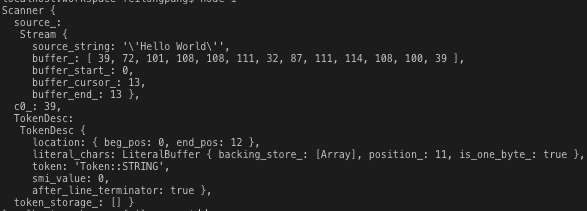

AST模块其实要写的话，100篇都写不完，我将一些简单知识点翻译成JavaScript代码来进行讲解(v8内部的复杂性永远都能超出我的意料，现在看到万行的源码都已经没感觉了)，如果谁想看C++源码，就去翻我前面的流水账。
代码地址：https://github.com/pflhm2005/V8record/blob/master/JS
先写几个结论。
案例中，单个词法'Hello'属于原始字符串，由AstRawString类进行管理。而整个待编译字符串"'Hello' + ' World'"中，加号左右的空格会被忽略，解析后分为三段，即字符串、加号、字符串。由于这段代码以字符串开头，被判定为一个字面量(literal)，在依次解析后发现了加号与另外一个字符串后结束，所以被判定是一个'普通二元运算表达式'，在expression中的标记分别是normal、binary operation、literal。
这里用JavaScript模拟一遍"'Hello + World'"的解析过程，完整的解析后面有人看再说。命名和逻辑尽量还原C++源码，有些类存在多层继承就不搞了，枚举用数组代替，部分地方的语法与调用可能会看起来有些奇怪，指针以及模版元那些就没办法了。
首先我们需要两个映射表，如下。
const kMaxAscii = 127;
const UnicodeToAsciiMapping = [];
for(let i = 0;i < kMaxAscii;i ++) {
UnicodeToAsciiMapping.push(String.fromCharCode(i));
}
/**
* 源码确实是一个超长的三元表达式
* Token是一个枚举 这里直接用字符串代替了
* 因为太多了 只保留几个看看
*/
const TokenToAsciiMapping = (c) => {
return c === '(' ? 'Token::LPAREN' :
c == ')' ? 'Token::RPAREN' :
// ...很多很多
c == '"' ? 'Token::STRING' :
c == '\'' ? 'Token::STRING' :
// ...很多很多
'Token::ILLEGAL'
};
const UnicodeToToken = UnicodeToAsciiMapping.map(v => TokenToAsciiMapping(v));一个map负责对Unicode与Ascii做映射，一个map负责对Unicode与Token类型的映射，这里v8利用数组下标来快速定位字符类型。
v8内部是对字符串做逐字解析，我们需要一个Stream类来管理和处理，实现一下。
class Stream {
constructor(source_string) {
/**
* buffer_不会在构造函数中初始化
* 但为了模拟v8这里暂时保存源字符串
*/
this.source_string = source_string;
/**
* 作为容器存储字符
*/
this.buffer_ = [];
/**
* 三个指针分别代表当前解析进度
*/
this.buffer_start_ = 0
this.buffer_cursor_ = 0
this.buffer_end_ = 0
}
ReadBlockChecked() {
return this.ReadBlock();
}
ReadBlock() {
this.buffer_ = this.source_string.split('').map(v => UnicodeToAsciiMapping.indexOf(v));
this.buffer_end_ = this.buffer_.length;
/**
* 这里的返回与源码不同 涉及gc 不做展开
*/
return this.buffer_.length;
}
/**
* 返回当前字符 并前进一格
*/
Advance() {
let tmp = this.peek();
this.buffer_cursor_++;
return tmp;
}
/**
* 返回当前字符
* 同时会做初始化
*/
peek() {
if(this.buffer_cursor_ < this.buffer_end_) {
return this.buffer_[this.buffer_cursor_];
} else if(this.ReadBlockChecked()) {
return this.buffer_[this.buffer_cursor_];
} else {
return null;
}
}
}有了这个类，就能对字符串逐字解析，但是还是需要一个机器来启动这个步骤，机器叫scanner。在实现扫描机器之前，我们还需要实现词法类，也就是如何描述单个词法。这个类在v8中叫TokenDesc，属于Ast中最基础的单元。
class TokenDesc {
constructor() {
/**
* 源码中是一个结构体
* 除了标记起始、结束位置还有若干方法
*/
this.location = {
beg_pos: 0,
end_pos: 0,
};
/**
* 负责管理字符串
* 还有一个名为raw_literal_chars的同类型属性负责储存源字符串
*/
this.literal_chars = new LiteralBuffer();
/**
* Token类型
*/
this.token = null;
/**
* 处理小整数
*/
this.smi_value = 0;
this.after_line_terminator = false;
}
}里面的属性基本上还原了v8源码，Location做了简化，另外literal_chars负责专门处理字符串，后面会给出实现。
token则标记了该词法的类型，类型判断可见上面的第二个映射表，根据不同的类型有不同的case处理。
smi_value则管理小整数类型的词法，可以去看jjc对于这个的介绍，我这里就不展开了。
有了词法类，再来实现扫描器scanner。
class Scanner {
constructor(source_string) {
this.source_ = new stream(source_string);
/**
* 当前字符的Unicode编码
* 如果为null代表解析完成
*/
this.c0_ = null;
/**
* 其实v8有三个词法描述类
* token_storage_是一个数组 里面装着那个三个类 这里就不用了
* 为了方便就弄一个
*/
this.TokenDesc = new TokenDesc();
this.token_storage_ = [];
}
/**
* 源码有current_、next_、next_next_三个标记 这里搞一个
*/
next() {
return this.TokenDesc;
}
Initialize() {
this.Init();
this.next().after_line_terminator = true;
this.Scan();
}
Init() {
this.Advance();
// 后面会有一些词法描述类对token_storage_的映射 这里跳过
}
Advance() {
this.c0_ = this.source_.Advance();
}
/**
* 这里有函数重载 JS就直接用默认参数模拟了
*/
Scan(next = this.TokenDesc) {
next.token = this.ScanSingleToken();
next.location.end_pos = this.source_.buffer_cursor_ - 1;
}
/**
* 单个词法的解析
*/
ScanSingleToken() {
let token = null;
do {
this.next().location.beg_pos = this.source_.buffer_cursor_;
if(this.c0_ < kMaxAscii) {
token = UnicodeToToken[this.c0_];
switch(token) {
case 'Token::LPAREN':
/**
* 有很多其他的case
* 因为只讲字符串
* 这里就不实现这个方法了
*/
return this.Select(token);
case 'Token::STRING':
return this.ScanString();
// ...
}
}
/**
* 源码中这里处理一些特殊情况 不展开了
*/
} while(token === 'Token::WHITESPACE')
return token;
}
}这个类比较大，简化了不少地方，核心当然是解析。在源码中，对scanner类调用初始化的Initialize时就会对第一个词法进行解析，如同我重写的那个逻辑，最后对字符串的处理方法就是那个ScanString。
在这里暂时没有将ScanString的实现给出来，主要是在这个方法关联着另外一个类，即之前TokenDesc类中的literal_chars。
所以先把管理字符串的类实现，再来看对字符串的最终解析。
const Latin1_kMaxChar = 255;
// constexpr int kOneByteSize = kCharSize = sizeof(char);
const kOneByteSize = 1;
class LiteralBuffer {
constructor() {
/**
* 源码中是一个Vector容器
* 有对应扩容算法
*/
this.backing_store_ = [];
this.position_ = 0;
/**
* 当字符串中有字符的Unicode值大于255
* 判定为双字节类型 这里先不处理这种
*/
this.is_one_byte_ = null;
}
/**
* 启动这个时默认字符串为单字节
*/
start() {
this.position_ = 0;
this.is_one_byte_ = true;
}
/**
* 只关心单字节字符 所以那两个方法不给出实现了
*/
AddChar(code_unit) {
if(this.is_one_byte_) {
if(code_unit <= Latin1_kMaxChar) {
return this.AddOneByteChar(code_unit);
}
this.ConvertToTwoByte();
}
this.AddTwoByteChar(code_unit);
}
AddOneByteChar(one_byte_char) {
/**
* 扩容算法简述就是以64为基准 每次扩容*4
* 当所需容器大于(1024 * 1024) / 3时 写死为2 * 1024 * 1024
*/
if (this.position_ >= this.backing_store_.length) this.ExpandBuffer();
this.backing_store_[this.position_] = one_byte_char;
this.position_ += kOneByteSize;
}
}其实这个类本身比较简单，只是用了一个容器来装字符，必要时进行扩容，单双字节不关心的话也就没什么了。
有了这个类，就能对字符串进行完整的解析，来实现scanner类的ScanString方法吧。
class Scanner {
// ...
ScanString() {
// 保存当前字符串的标记符号 ' 或 "
let quote = this.c0_;
this.next().literal_chars.Start();
while(true) {
this.AdvanceUntil();
/**
* 特殊符号直接前进一格
*/
while(this.c0_ === '\\') {
this.Advance();
}
/**
* 遇到结束的标记代表解析结束
*/
if (this.c0_ === quote) {
this.Advance();
return 'Token::STRING';
}
this.AddLiteralChar(this.c0_);
}
}
AddLiteralChar(c) {
this.next().literal_chars.AddChar(c);
}
}可以看到，除去那个AdvanceUntil方法，其实还是正常的逐字遍历字符，当遇到同一个标记时，就代表字符串解析结束。
但是这个AdvanceUtil方法确实比较有意思，简述就是快速检测字符串的结尾位置并完成扫描，顺利的话跑完这个方法就结束了整个ScanString。其参数是一个函数，负责检查当前字符是否可能是字符串结束标志。C++源码中用的是匿名函数，看起来比较难受，这里用JS重写一遍，如下。
class Scanner {
// ...
/**
* 这里相对源码有改动
* 1、实际调用的是source_上的方法 并把返回值给了c0_
* 2、判断函数在这里写实现
*/
AdvanceUntil() {
/**
* 这里需要实现std标准库中一个方法
* 实际上是三个参数 且前两个参数为迭代器 为了方便暂时就不完美实现了
*/
const find_if = (arr, start, end, callback) => {
let tarArr = arr.slice(start, end);
let tarIdx = tarArr.findIndex(v => callback(v));
return tarIdx === -1 ? end : tarIdx;
}
const callback = (c0) => {
/**
* 代表当前字符可能是一个结束符 这里简化了判断 源码如下
* uint8_t char_flags = character_scan_flags[c0];
* if (MayTerminateString(char_flags)) return true;
*/
if(["\'", "\""].includes(UnicodeToAsciiMapping[c0])) return true;
this.AddLiteralChar(c0);
return false;
}
/**
* 在字符串中寻找第一个字符结尾标记的位置
* 例如'、"等等
*/
let next_cursor_pos = find_if(this.source_.buffer_, this.source_.buffer_cursor_, this.source_.buffer_end_, callback);
if(next_cursor_pos === this.source_.buffer_end_) {
this.source_.buffer_cursor_ = this.source_.buffer_end_;
this.c0_ = null;
} else {
this.source_.buffer_cursor_ = next_cursor_pos + 1;
this.c0_ = this.source_.buffer_[next_cursor_pos + 1];
}
}
}这里其实也对字符串进行了遍历，但只是粗糙的扫描，在一般情况下，这个方法走完字符串就遍历完毕，但是偶尔也会有特殊情况，比如说"ab'c'd"、"abc\"d"。当遇到特殊情况，这里只能将前面的字符add后，交给外部继续处理。
里面其实还有一个映射表，叫character_scan_flag，也是对单个字符的类型判定，属于一种可能性分类。比如遍历到一个字符z，这里就会给一个标记kCannotBeKeyword，代表这个词法不可能是一个关键词，在某些情况可以快速跳过一些流程。同理，在遇到'、"字符时，会被判断可能是一个字符串的结尾标记，这里就用上了。这个映射表比较复杂，前面我就没搞出来。
至此，一个字符串的词法就算是解析完了，最后会返回一个类型的Token::STRING的标记，作为词法描述类型。当然，这个单独的词法实际上没有任何意义，单独拿出来会被忽略。但是如果与运算符ADD和另外一个字符串连起来，会进化成一个二元运算表达式，这些东西都是后面的事了。
给一个测试结果，执行的时候要注释掉一些方法，因为没有给实现。
let scanner = new Scanner(source_code);
scanner.Initialize();
console.log(scanner)结果如图.

其中TokenDesc会被包装成更高层的类最后进入抽象语法树，这些是后话了。字符串的存储方式、hash表等等后面有空再说吧。